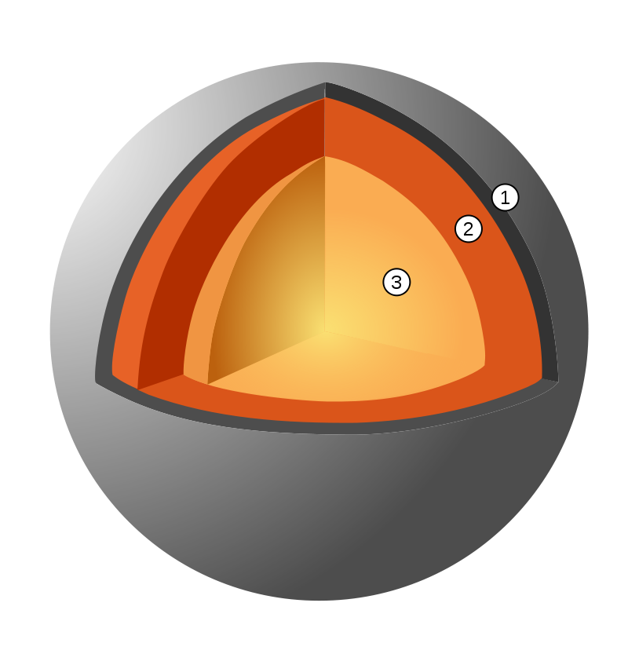

Mercur este planeta cea mai apropiata de Soare, inconjurandu-l o data la fiecare 88 zile pamantene. Luminozitatea sa variaza intre -2,0 si 5,5 in magnitudine aparenta, dar nu este usor de vazut fiindca cea mai mare separare unghiulara (cea mai mare elongatie) fata de Soare este de doar 28,3 grade, insemnand ca se poate vedea doar imediat dupa apusul Soarelui. In perioada 1974 - 1975, Mercur a fost studiata cu ajutorul sondei Mariner 10, care a cartografiat doar 40 - 45 % din suprafata planetei. incepand din 2011, sonda spatiala MESSENGER orbiteaza in jurul planetei pentru a studia compozitia chimica, geologia si campul magnetic.
Mercur este una din cele patru planete telurice, insemnand ca este un corp pietros, ca si Pamantul. Este cea mai mica dintre cele patru, cu un diametru de 4.879 km la ecuator. in compozitie are aproximativ 70 % metale si 30 % silicati. Ca densitate Mercur este pe locul doi in Sistemul Solar, cu 5.430 kg/m3, densitate cu putin mai mica decat cea a Pamantului.
Densitatea mare a planetei Mercur poate fi utilizata pentru a descoperi detalii despre structura sa interna. in timp ce densitatea mare a Pamantului rezulta partial din comprimarea nucleului, Mercur este mult mai mic si regiunile sale interne nu sunt atat de comprimate. Asadar, pentru ca sa aiba o densitate atat de mare, nucleul sau trebuie sa fie mare si bogat in fier. Geologii estimeaza ca nucleul planetei Mercur ocupa aproximativ 42 % din volumul sau (nucleul Pamantului ocupa aproximativ 17 % din volumul sau).
Deasupra nucleului este mantaua care are 600 km grosime. Se crede ca in trecutul planetei Mercur, un impact catastrofal a avut loc, fiind lovita de un corp cu diametrul de cateva sute de kilometri care a catapultat o mare parte din mantaua originala, rezultand o manta relativ subtire in comparatie cu nucleul ei mare, dar exista si teorii alternative care sunt discutate mai jos.
|  |
Se crede ca planeta Mercur are o crusta in jur de 100-200 km grosime. O trasatura distinctiva a planetei Mercur este ca are foarte multe rifturi, unele extinzandu-se pe sute de kilometri. Se crede ca acestea s-au format in timp ce nucleul si mantaua planetei s-au racit si s-au contractat dupa ce crusta s-a solidificat.
|